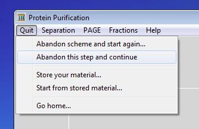

back to the start
previous
exercisenext
exercise
back to the start
previous
exercisenext
exercise
Exercise 3 of 6
Ion exchange chromatography of a simple mixture of three proteins
Now you are going to try to purify the mixture using ion
exchange chromatography. The medium that you will use is DEAE-cellulose.
DEAE- stands for diethylaminoethyl-, a tertiary amino group which will
carry a positive charge except at very alkaline pH values. So your medium
will be positively charged and therefore will bind proteins which carry
a net negative charge. You need to think carefully about the isoelectric
point (pI) of a protein and the pH value of the buffer in which the protein
is suspended. If the pH of the buffer is the same as the pI of the protein,
then the protein will carry zero net charge. (Not zero charge - the positive
charges exactly equal the negative charges and so there is a net
zero charge.) If the protein is suspended in a buffer whose pH value is
less than the protein's pI, the protein will pick up protons from the buffer
and hence have a net positive charge. Conversely, if the protein is suspended
in a buffer more alkaline than the protein's pI, the protein will lose
protons to the buffer and become net negatively charged. This is an
important concept in understanding how proteins interact with ion-exchange
media. Here is the 2-dimensional electrophoresis gel of the mixture.
Look at it again.

If this mixture was applied to a column of DEAE-cellulose at pH 7.0,
which proteins would bind to the column?
Which proteins would bind at pH 8.0?
Which proteins would bind at pH 6.0?

Now test your predictions. If you have not already done so, click on
the Quit menu and select Abandon this step and continue.

Then click on the Separation menu and select Ion
exchange chromatography...

Click on the DEAE-cellulose and salt gradient
radio buttons. Then click on the OK button.

Use the buttons to set the pH to 7.0
and then click on the OK button.
 In order to elute any proteins bound to the column, you need to wash the
column with a buffered salt solution. If the concentration of this solution
increases with time, then the proteins will be eluted in order of their
net charge.
In order to elute any proteins bound to the column, you need to wash the
column with a buffered salt solution. If the concentration of this solution
increases with time, then the proteins will be eluted in order of their
net charge.
So you need to tell the program about this solution. Set the start
of the gradient to 0.0 and the end of the gradient to 0.5
molar (if they are not already set to these values). Now click on the OK
button.
Once again, the computer will simulate the behaviour of the mixture
under the conditions that you requested. Look at the elution profile. As
before, the computer has measured the absorbance of each fraction at 280nm.
It has also measured the salt concentration in each fraction. The salt
gradient starts to emerge from the column at fraction 32, so anything present
in the 'earlier' fractions represents material that did not bind to the
column, but was washed straight through.
How many peaks are there? Examine the material in each by 2-dimensional
electrophoresis. Which protein is in which peak? Is this what you would
have expected?
Use the Quit menu to Abandon this step
and continue. Then try repeating the experiment at pH 8.0 and
6.0. (You may need to adjust the salt gradient to ensure that all three
proteins are eluted.) How do the results differ? Can you explain the
differences?
Do you think that you could purify protein 2 in a single step by
gel filtration or ion exchange chromatography?
Can you think of a method for purifying protein 2 from this mixture
using the methods that you have tried so far?
Would it make a difference if you changed the order in which each
method was used?
Try
to purify protein 2.